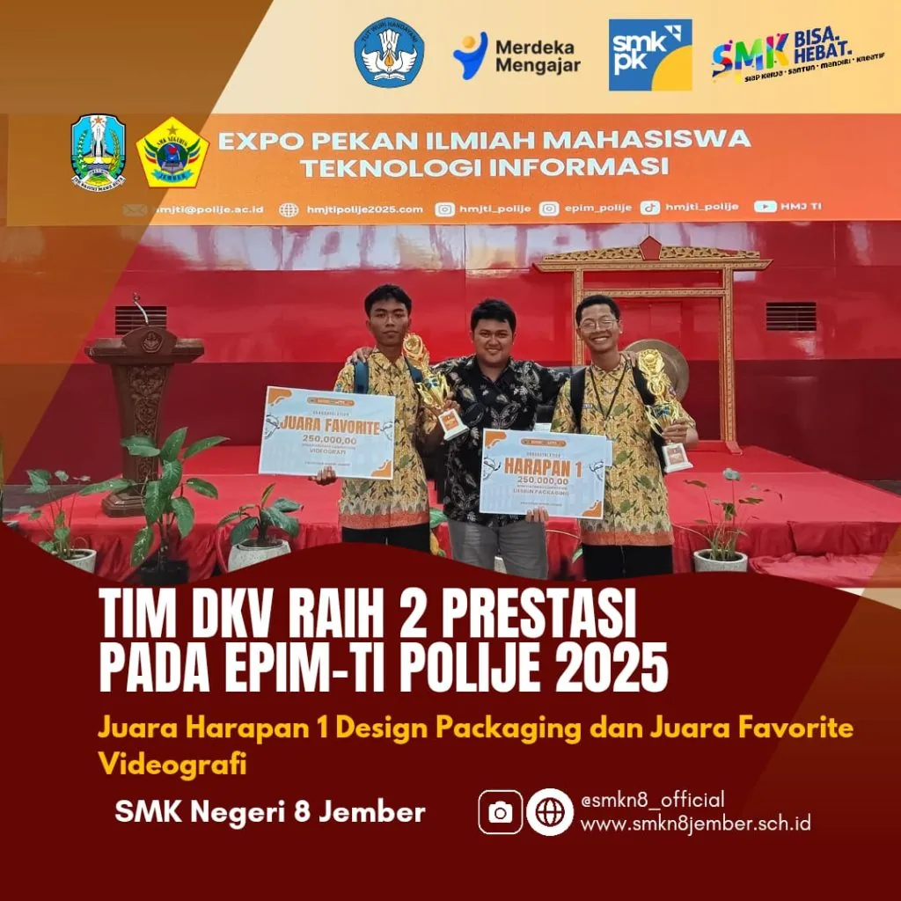
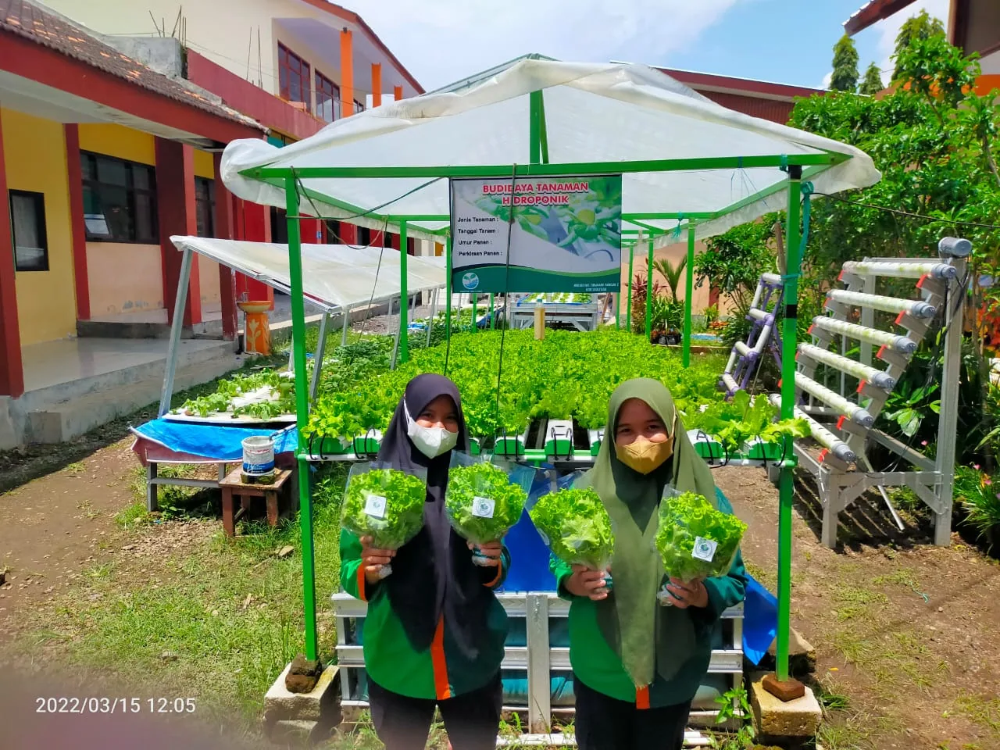

1Komputer & InformatikaDesain Komunikasi Visual
Kreativitas seni visual, fotografi, videografi, dan desain grafis berstandar industri kreatif.
SelengkapnyaSMK Negeri 8 Jember menyiapkan lulusan yang siap kerja, siap berwirausaha, dan siap melanjutkan pendidikan — melalui 7 konsentrasi keahlian, teaching factory, dan kemitraan industri nyata.


“Website merupakan salah satu wujud kemajuan teknologi yang memudahkan masyarakat mendapatkan informasi. Semoga isi dan berita di dalamnya dapat diketahui masyarakat luas dan bisa diambil manfaat darinya.”
Situs resmi ini merangkum profil, sejarah, data guru & siswa, tujuh konsentrasi keahlian, hingga ratusan berita kegiatan sekolah — seluruh foto, video, dan artikel tersimpan lokal di server sekolah.
Hj. Rahmah Hidana, S.Pd., M.Si.Kepala SMKN 8 Jember
Teknik Otomotif, Teknik Komputer & Informatika, serta Teknologi Pertanian — semuanya dilengkapi bengkel, lab, dan lahan praktik sendiri.

1Komputer & InformatikaKreativitas seni visual, fotografi, videografi, dan desain grafis berstandar industri kreatif.
Selengkapnya 2Komputer & Informatika
2Komputer & InformatikaPemrograman web, mobile, desktop, hingga game — juara 1 National Essay Competition 2025.
Selengkapnya 3Komputer & Informatika
3Komputer & InformatikaPerakitan, jaringan, dan administrasi server untuk calon teknisi & administrator jaringan.
Selengkapnya4Teknik OtomotifPerawatan & perbaikan mobil dari engine hingga kelistrikan, bermitra dengan Daihatsu.
Selengkapnya 5Teknik Otomotif
5Teknik OtomotifKurikulum tersinkron Yamaha; alumni menembus Yamaha Engineering School & universitas luar negeri.
Selengkapnya6Teknologi PertanianGreenhouse hidroponik, anggrek, dan tanaman hias; juara 1 Agriculture Product Innovation.
Selengkapnya 7Teknologi Pertanian
7Teknologi PertanianProduksi benih unggul & kultur jaringan — teknik perbanyakan tanaman paling modern.
SelengkapnyaProgram PK skema reguler lanjutan dengan gedung pusat keunggulan DKV, pembelajaran mendalam, dan penyelarasan kurikulum industri.
Pusat Keunggulan · sejak 2023

Produksi nyata: hidroponik, edamame, kompos, hingga produk agribisnis yang dipasarkan ke masyarakat.
Lahan praktik luas, greenhouse tanaman hias, hidroponik sayur, anggrek, rumah kompos & lab kultur jaringan.
52 mitra MoU aktif: Yamaha, Daihatsu, PT Indo Bismar, PT Epson, PT Mitratani 27, hingga Beijing Institute of Technology.
Penghargaan SEASO Science Olympiad di Penang, beasiswa Tiongkok & Taiwan, 20+ lulusan SNBP/SNBT tiap tahun.
Pramuka, Paskibra, pencak silat, tari, hadrah, aeromodelling hingga jurnalistik — plus majalah dinding digital karya siswa.
300+ artikel lengkap dengan foto & video tersimpan lokal di situs ini.


16 rombel · 36 murid per kelas · jalur afirmasi, nilai rapor + TKA, dan prestasi. Segera daftarkan dirimu menjadi bagian dari Eskalaber!